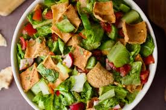

Fattoush salad

Description
This fattoush recipe is a colorful tossed salad with a lemony garlic dressing. Fattoush is one of the most well-known Middle Eastern salads and a standard dish on the mezza (small dishes) table. If you've never made a single Arabic dish, this is a delicious and healthy place to start.
Ingredients
- 1 tbsp vegetable oil, for frying
- 2 small (4 inch) pita breads, torn into pieces
- 1 large cucumber, diced
- 3 cups halved grape tomatoes
- 3/4 cup chopped Italian parsley
- 3/4 cup chopped fresh mint
- 1/2 red onion, finely diced
- 2 tbsp extra-virgin-olive oil
- 1 tbsp fresh lemon juice
- 1 tsp ground sumac
- 1 clove garlic, crushed
- salt and black pepper to taste
- 1 ounce feta cheese
Steps
- Heat oil in a large skillet over medium-high heat. Working in batches, fry pita pieces in hot oil until golden brown on both sides. Blot dry with paper towels and set aside.
- Combine cucumber, tomatoes, parsley, mint, red onion, olive oil, lemon juice, sumac, garlic, kosher salt, and ground black pepper in a large serving bowl. Gently toss salad with fried pita pieces. Grate feta cheese on top using a small cheese grater to serve.